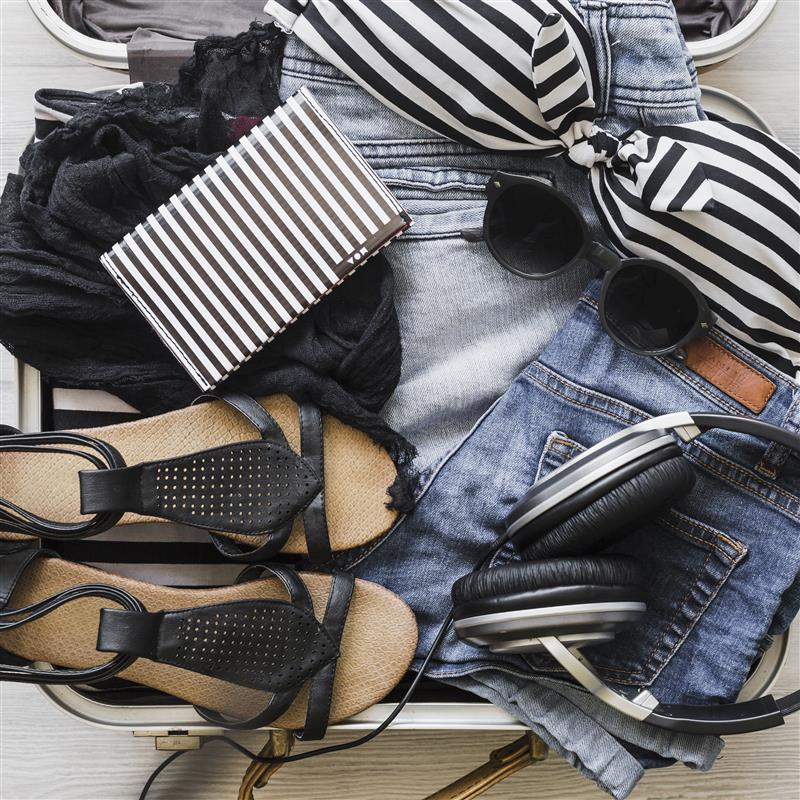
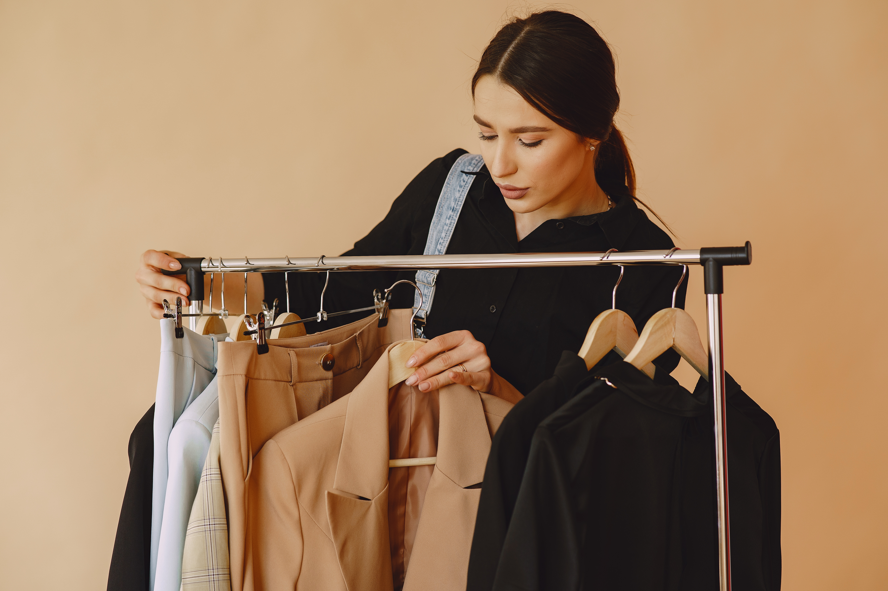
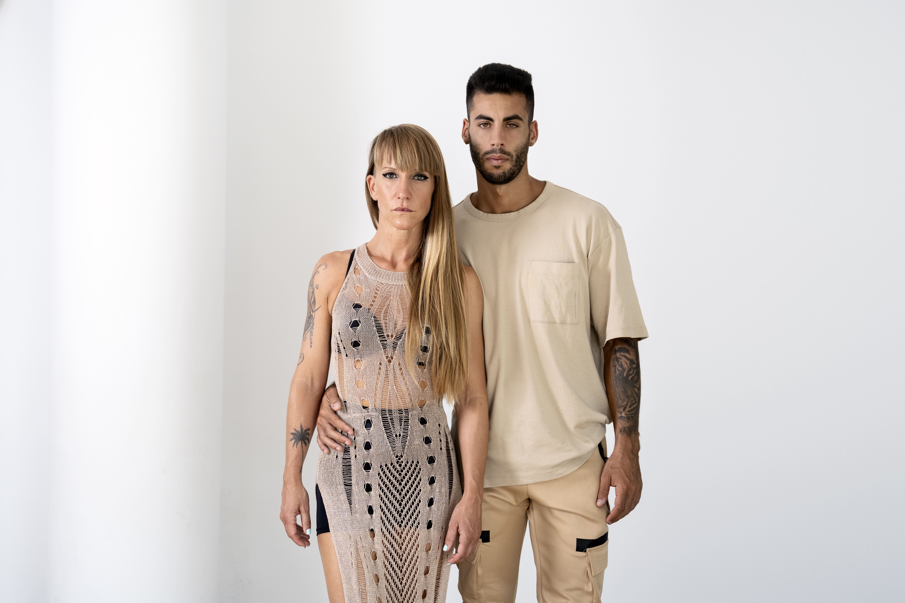
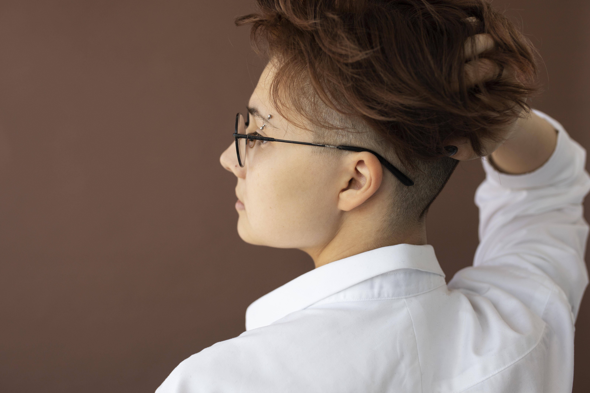
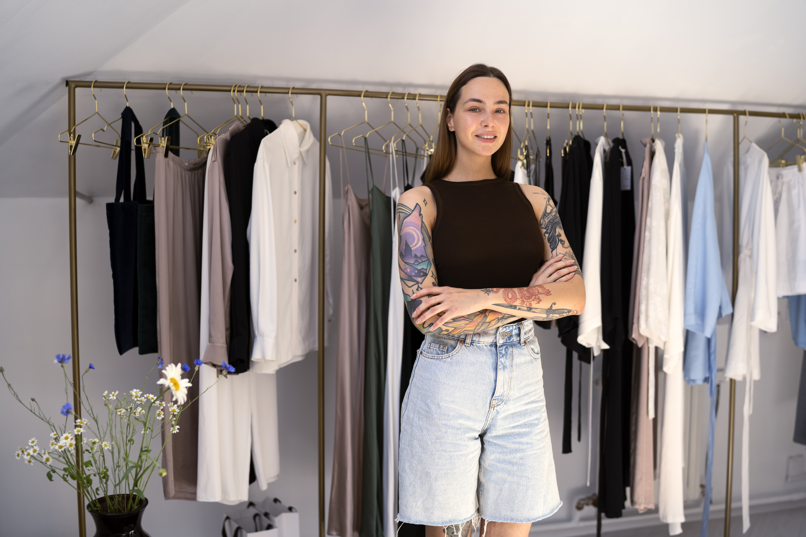

A ascensão do utility-chic marca um momento em que a moda encontra a funcionalidade sem abrir mão da estética. Peças com bolsos utilitários, cortes estruturados e inspiração no workwear ganham novas leituras sofisticadas, provando que praticidade também pode ser elegante. É um estilo que dialoga com a vida urbana contemporânea, onde conforto, versatilidade e propósito se tornam essenciais. Nesse cenário, as texturas naturais assumem um papel central. Tecidos como linho, algodão cru, lã e sarja reforçam a conexão com o artesanal e o sustentável, trazendo sensações táteis que enriquecem o visual. Tons terrosos, verdes e neutros complementam essa narrativa, criando uma moda mais consciente, atemporal e alinhada com o desejo atual de consumir menos, porém melhor.

Peças versáteis, confortáveis e com um toque de rebeldia ganham destaque como elementos-chave do guarda-roupa contemporâneo. Os modelos confeccionados em sarja ou jeans mais pesados aparecem com força, trazendo estrutura, durabilidade e um visual marcante. Bolsos funcionais, recortes estratégicos e caimentos amplos reforçam a proposta utilitária, ao mesmo tempo em que garantem liberdade de movimento e praticidade para o dia a dia. A paleta de cores passeia pelos neutros clássicos, como cáqui, verde-militar e tons terrosos, criando uma base atemporal e fácil de combinar. Para quem deseja ousar, surgem também versões em cores vibrantes, perfeitas para transformar a peça em um verdadeiro statement de estilo. O resultado é uma estética urbana e moderna, que equilibra conforto, personalidade e atitude, sem abrir mão da versatilidade.

Peças customizadas ganham protagonismo, destacando-se pelos recortes criativos, costuras aparentes e composições em patchwork que reforçam a identidade única de cada item. Essa estética valoriza o feito à mão, o reaproveitamento e a expressão individual, transformando a roupa em uma verdadeira extensão da personalidade de quem a veste. Jaquetas jeans com aplicações, bordados ou intervenções artísticas, calças com barras desfeitas, rasgos estratégicos e acabamentos irregulares, além de camisas construídas a partir da emenda de diferentes tecidos e texturas, serão especialmente valorizadas. O resultado é um visual autêntico e cheio de atitude, que mistura referências urbanas, vintage e contemporâneas, celebrando a criatividade e a liberdade de estilo em produções únicas e cheias de significado.

A abolição das barreiras de gênero na moda se torna ainda mais forte e evidente, refletindo um movimento de liberdade, inclusão e expressão individual. As peças deixam de ser limitadas por classificações tradicionais e passam a ser exploradas de forma fluida, permitindo combinações criativas e cheias de personalidade. Saias e vestidos surgem ao lado de tênis robustos e jaquetas oversized, criando contrastes interessantes entre delicadeza e força, feminilidade e atitude urbana. Da mesma forma, ternos clássicos são reinterpretados quando usados com tops cropped, regatas ou peças mais ajustadas, quebrando padrões e trazendo um ar contemporâneo ao visual. Essa fluidez amplia as possibilidades de styling e reforça a ideia de que a moda é uma ferramenta de expressão livre, onde o mais importante é o conforto, a identidade e a autenticidade de quem veste.

Pequenas, práticas e cheias de estilo, essas bolsas se consolidam como acessórios indispensáveis para quem busca unir funcionalidade e sofisticação. Com design retrô, muitas vezes inspirado em clássicos atemporais, e confeccionadas em materiais variados como couro, nylon ou tecidos diferenciados, elas conseguem aliar durabilidade, conforto e estética de forma impecável. Além de permitir carregar apenas o essencial, essas peças elevam qualquer produção, adicionando um toque de elegância e leveza ao visual. Extremamente versáteis, transitam com facilidade entre diferentes ocasiões — do dia a dia corrido a eventos mais sofisticados — e conseguem complementar tanto looks minimalistas quanto produções mais elaboradas. Pequenas aplicações, ferragens delicadas e acabamentos refinados tornam cada modelo único, transformando essas bolsas em verdadeiros protagonistas do guarda-roupa. O resultado é um acessório que não apenas cumpre sua função prática, mas também traduz personalidade, estilo e atenção aos detalhes, mostrando que moda e utilidade podem caminhar juntas de forma harmoniosa

